AboutFace
Editorial design · Typographic constraint · Five journals
Less to work
with, on purpose.
A five-part journal series about how much hierarchy, rhythm and tension you can build when the basic typographic variables are locked.
Each issue unlocks one more variable.
The constraint ladder
Pure negative space
With size and weight locked, hierarchy comes only from space, tracking, orientation and baseline alignment.
Optical contrast
A second point size brings instant scale contrast, still in one weight.
Visual density
Light against heavy makes focal points without changing the size.
Interplay
Size and weight together give several layers of reading and rhythm.
Everything unlocked
Multiple sizes, weights, rules and shapes for an energetic cover that still respects the grid.
Pure negative space
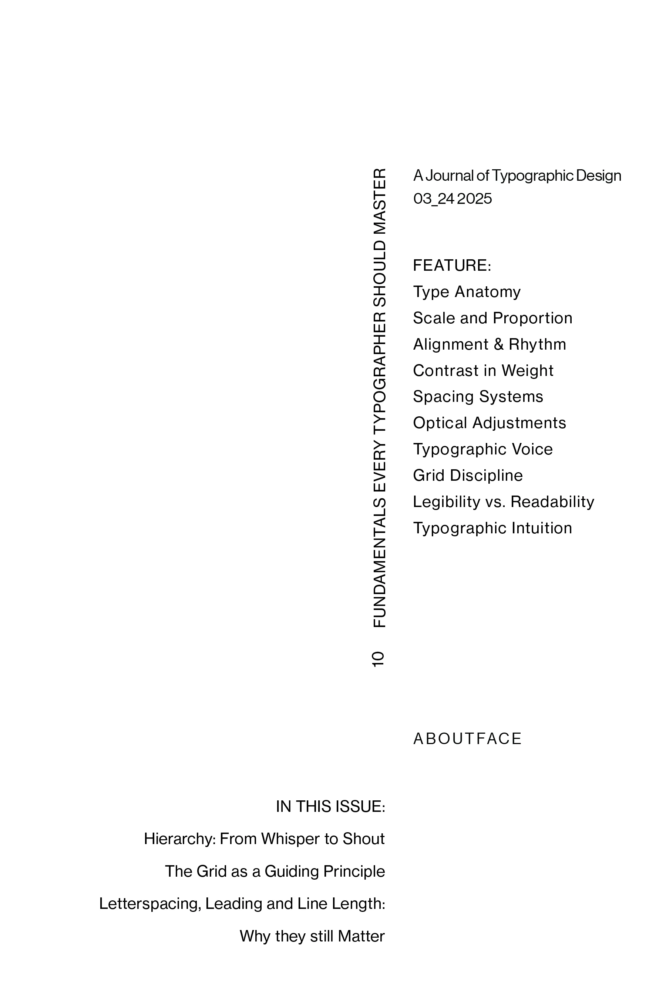
Optical contrast
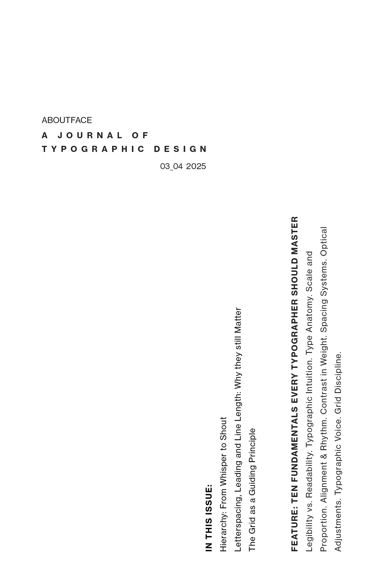
Visual density
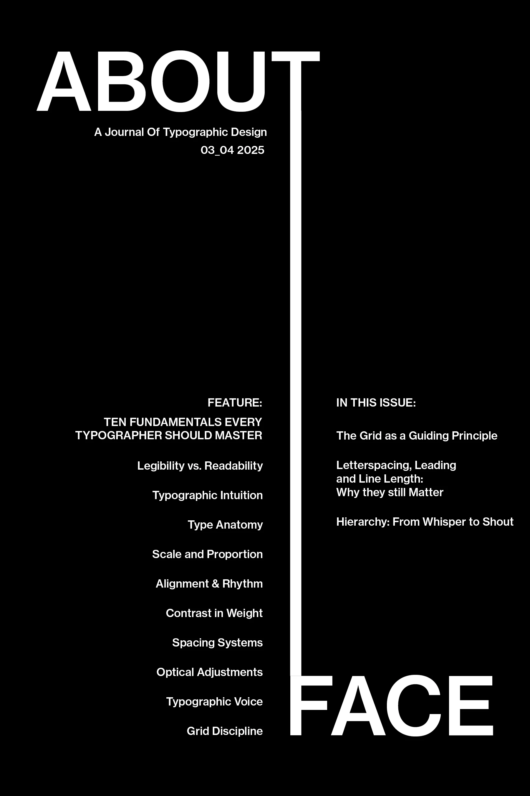
Interplay
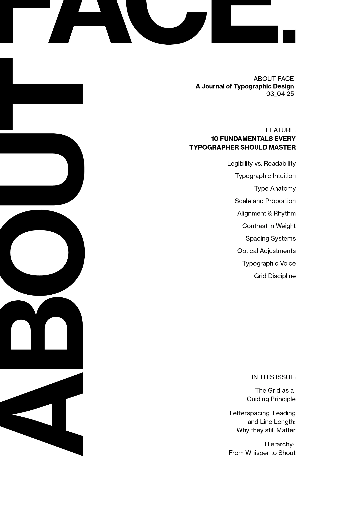
Everything unlocked
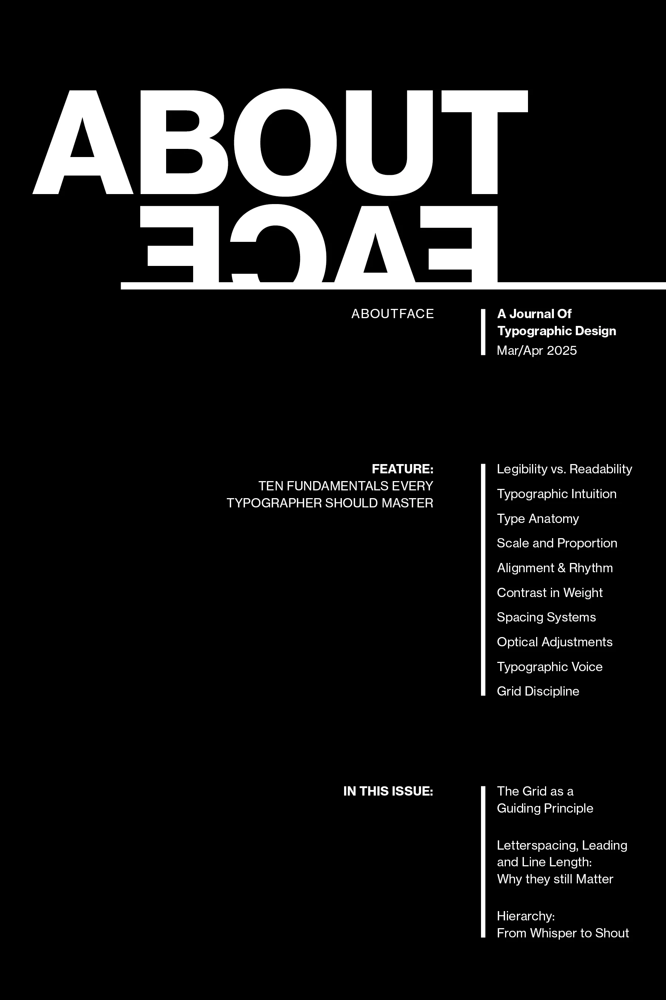
All five
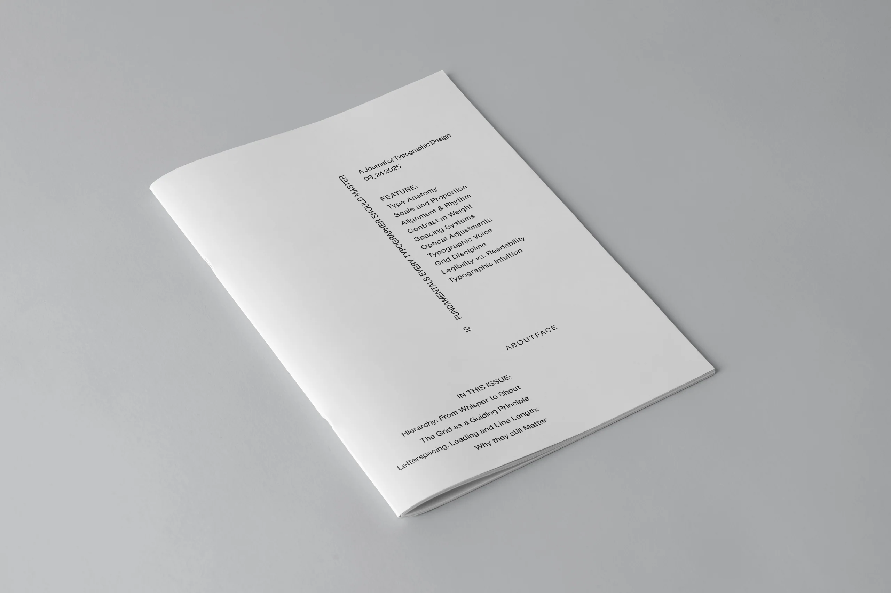
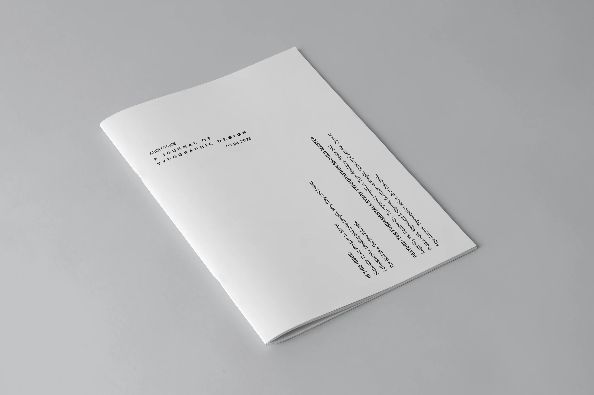
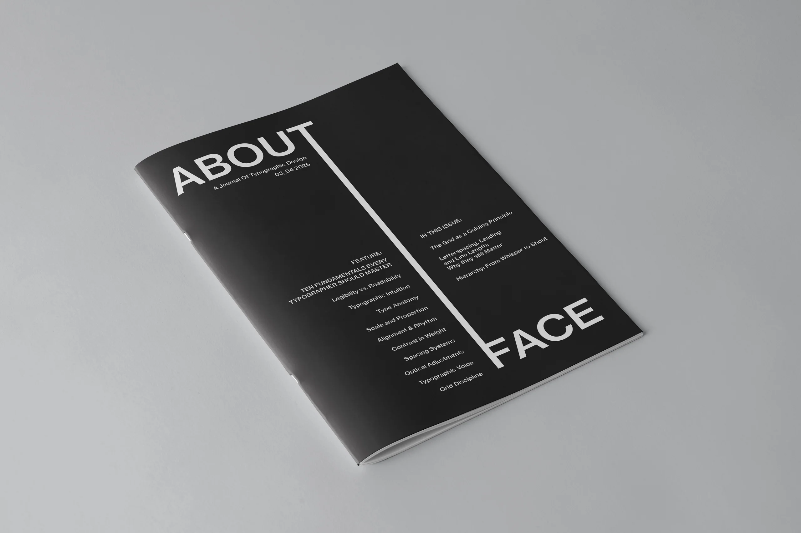
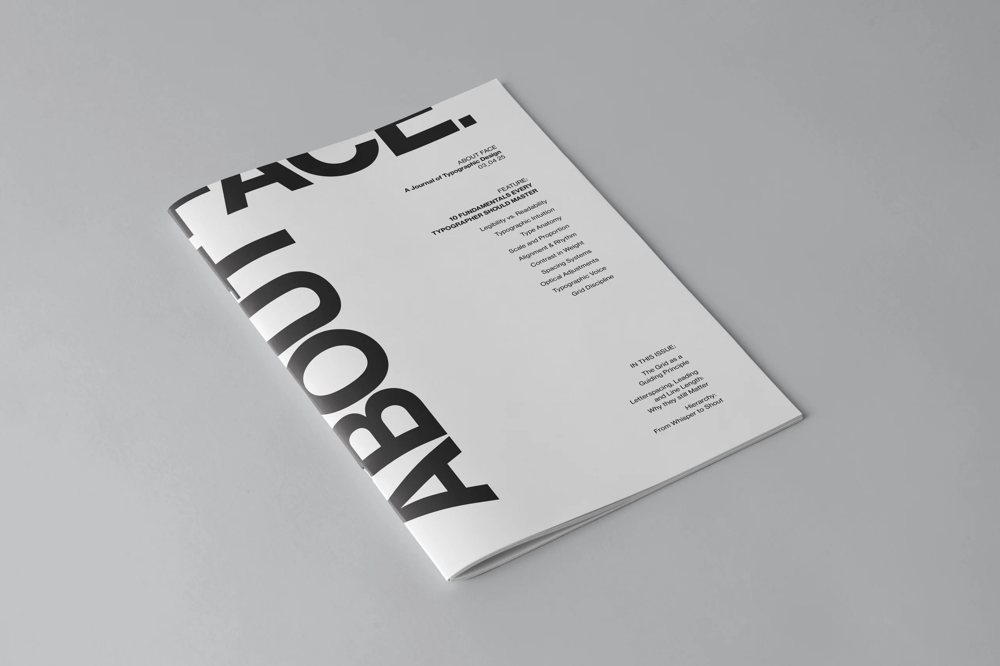
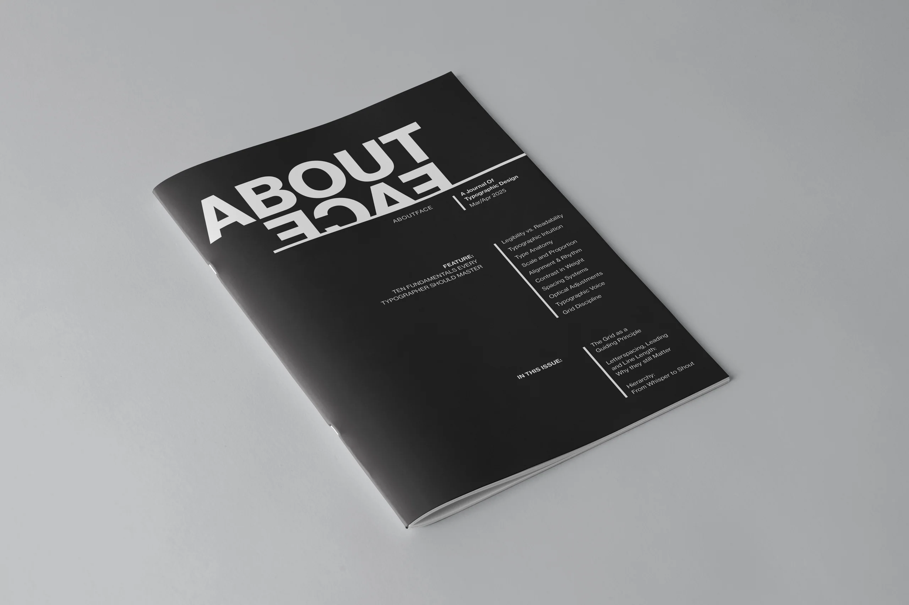
Drag or scroll sideways · click to enlarge
Side by side · 01 → 05
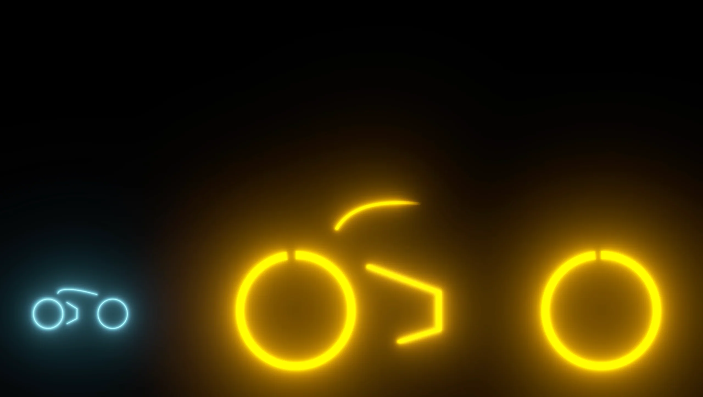
Motion Reel